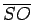
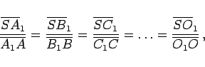
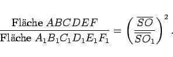
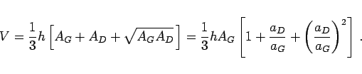
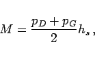

Pyramidenstumpf wird eine Pyramide genannt, deren Spitze durch eine Ebene parallel zur Grundfläche abgeschnitten ist.
Mit  als Höhe der Pyramide, d.h. als Lot von der Spitze auf die Grundfläche, gilt:
|  | (3.133) |
|  | (3.134) |
Wenn AD und AG die obere und untere Grundfläche sind, h die Höhe des Pyramidenstumpfes, also der Abstand zwischen den Grundflächen, aD und aG die einander entsprechenden Seiten der Grundflächen, dann gilt für das Volumen:
|  | (3.135) |
Die Mantelfläche des regulären Pyramidenstumpfes ist
|  | (3.136) |
wobei pD und pG die Umfänge der Grundflächen sind und hs die Höhe der Seitenflächen.